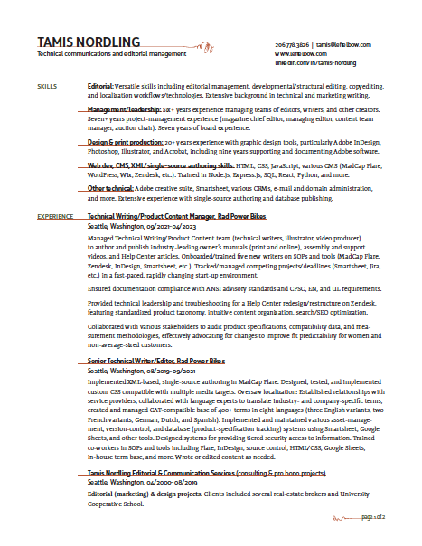

Work background
HI THERE. I’m a full-stack web developer and writer/editor with extensive experience in editorial management, electronic publishing and design (esp. Adobe Creative Suite), technical writing/editing, database publishing, and more. I worked at Adobe Systems for ten years, mostly as a technical editor; my last job there was as the chief editor of Adobe Magazine. I’m currently a consultant.
Nitty-gritty on my professional background can be found via my LinkedIn profile or by downloading my résumé pdf. Please contact me if I can help with your next web development, editorial, design, or technology project.
Contact me
You can find me via social media (links below) or you can send me an email:
Résumé
Download a PDF by clicking on this image:
Colophon
This web site, a work in progress, has been prepared entirely with HTML, CSS, and Javascript. I may do some refactoring with fancier tools at some point, but it has been fun putting this together using just the essentials.
The mobile experience was primary when I did the wireframing of the index page elements and grid in Adobe InDesign.
This site makes heavy use of CSS grid, with the grid and positioning of elements changing with three media queries. I used Javascript to create listeners for various elements on the index page so that they would respond as groups to mouseovers, mouseouts, and clicks. Javascript is also used to create a sticky scroll on the secondary menu of this particular page.
The body copy is set in Lato with a 1.5em line height. Headers are in Fira Sans or Fira Sans Condensed.
Leftelbow? But . . . why?
People occasionally ask why my personal media empire is named leftelbow.com. Here’s the story.
It was late one night in the early 2000s, and I was staring with increasing exhaustion at the wan glow of my iMac CRT. I was trying to register a domain name, but time was running out. Our newborn son had a strict policy of not sleeping more than two hours at a time, and it had been more than an hour already.
Unfortunately, the registration process wasn’t going well. I wanted a domain name that was easy to spell and remember, which, sadly, ruled out all derivations of the name my parents had given me. I’d spent several days brainstorming solutions, but all of my best ideas—even the runners-up—were already taken, and I found myself improvising while sleep-deprived and increasingly punchy, a state that renders me dangeously amused by my own thoughts.
At one point I found myself typing leftelbow.com into the registry engine, and—what?!—it was actually available! Leftelbow.com was easy to spell, and it wouldn’t pigeonhole me professionally. Not only that, but compared to the other ideas blundering from my head like revelers leaving a bar at closing time, leftelbow.com seemed quite dignified, even charming. I paid for the domain and have had it ever since.
The end.